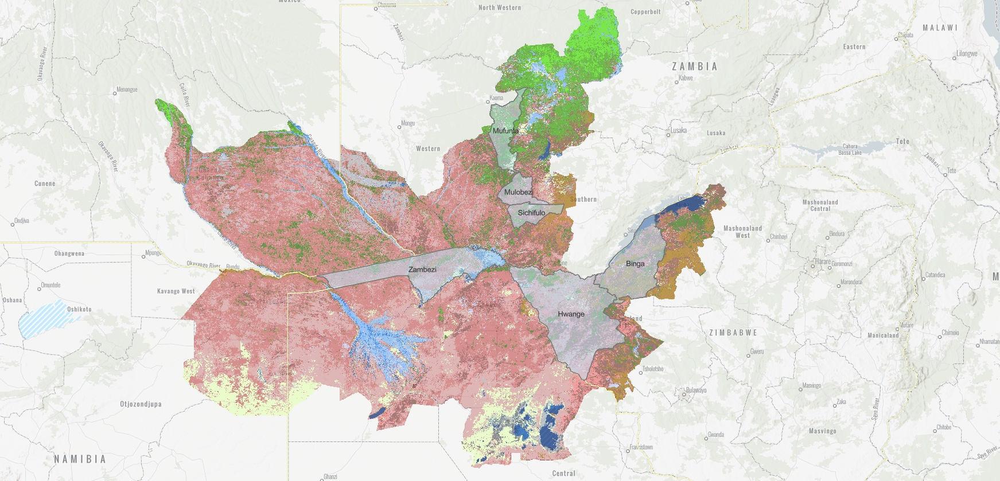

02.1
Cartografía de cobertura y uso del suelo
Clasificación de la cobertura y el uso del suelo a partir de imágenes satelitales, a escala de paisaje, nacional o transfronteriza.
Pilar 02 · Análisis espacial
Cartografiamos hábitats y cobertura del suelo, seguimos los cambios a lo largo del tiempo y construimos sistemas de monitoreo que muestran si un programa está funcionando.

Contexto
Toda actividad ocurre en algún lugar. Tanto si gestiona una cadena de suministro global, se abastece de explotaciones agrícolas o dirige un programa de conservación, entender los lugares donde se desarrolla su trabajo es clave para su éxito. A cualquier escala, desde cadenas globales y paisajes enteros hasta cuencas hidrográficas y parcelas individuales, la teledetección, los SIG y la IA pueden afinar su comprensión y hacer sus operaciones y programas más eficaces y eficientes.
Aplicamos tecnología geoespacial e inteligencia artificial de vanguardia para resolver retos ambientales en cualquier parte del mundo. Nuestra experiencia abarca el monitoreo de hábitats y biodiversidad, el análisis de la deforestación, la estimación de reservas de carbono, el monitoreo del impacto de programas y la evaluación de riesgos para empresas y sus cadenas de suministro.
Póngase en contacto con nosotros para una primera conversación sobre cómo nuestro equipo puede ayudar a su organización a sacar el máximo partido de la amplia gama de herramientas espaciales disponibles.
Qué ofrecemos
Clasificación de la cobertura y el uso del suelo a partir de imágenes satelitales, a escala de paisaje, nacional o transfronteriza.
Análisis de series temporales para detectar dónde los hábitats se están degradando, recuperando o transformando.
Marcos de indicadores y sistemas de monitoreo para medir la biodiversidad y la salud de los ecosistemas a lo largo del tiempo.
Diseño de muestreos y campañas de campo, e integración de los datos de campo con modelos de teledetección.
Monitoreo de los servicios ecosistémicos a lo largo del tiempo con flujos automatizados de teledetección, que muestran cómo cambian los beneficios que aporta la naturaleza.
Productos visuales claros para equipos de programas, financiadores y el público.
Experiencia
Nuestro equipo ha realizado análisis espaciales para programas internacionales de conservación, instituciones de investigación y desarrolladores de proyectos de carbono. Esto incluye:
Trabajos relacionados
Cuéntenos brevemente su proyecto. Normalmente respondemos en un día laborable.